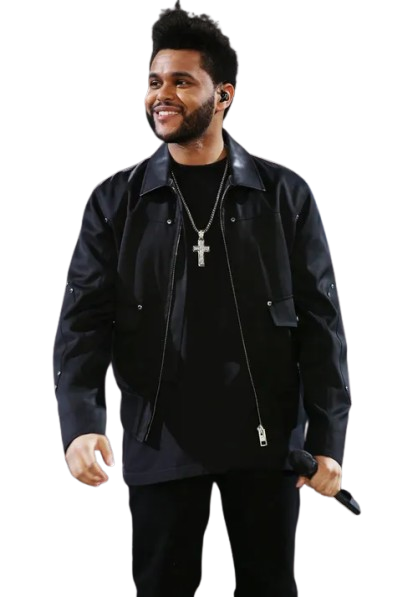

Born Abel Tesfaye in Toronto, The Weeknd rapidly evolved from an enigmatic figure releasing atmospheric, dark R&B mixtapes like House of Balloons to a global pop superstar dominating charts and selling out arenas worldwide.
His transition was cemented with his massive 2015 album, Beauty Behind the Madness, and subsequent records like After Hours, which produced the record-breaking hit "Blinding Lights".
Beyond his signature falsetto and blend of R&B, pop, and synth-wave, he is recognized for crafting intricate visual narratives and adopting distinct personas that have made him a cultural icon and one of the best-selling artists of the 21st century.
Abel Tesfaye is heavily involved in charity, particularly causes related to his heritage. He has donated millions to relief efforts in Ethiopia and to the XO Humanitarian Fund in partnership with the United Nations World Food Programme (WFP).